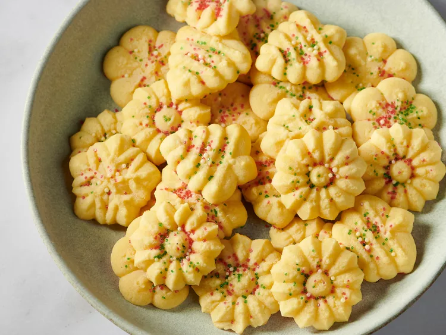

Butter Rich Spritz Butter Cookies

This is my mom's spritz cookie recipe that she made for all of the holidays
and it's still the best. She even used food coloring for the different designs,
like green trees, etc. The kids love to decorate them as much as
they love to eat them!
INGREDIENTS
- 2 1/2cups all-purpose flour
- 1 cup butter, softened
- 2 large egg yolks
- 1 teaspoon vanilla extract
PROCEDURE
- Beat butter and sugar together in a medium bowl
with an electric mixer until light and fluffy.
- Stir in egg yolks, almond extract, and vanilla extract.
- Gradually blend in sifted flour mixture.
- Fill a cookie press with dough and shoot cookies about
1 1/2 inches apart onto an
ungreased cookie sheet. If you like, decorate with
colored sugar or sprinkles at this time.
- Bake cookies for 6 to 8 minutes in the preheated oven; let cool on cookie sheet.
Merry Christmas